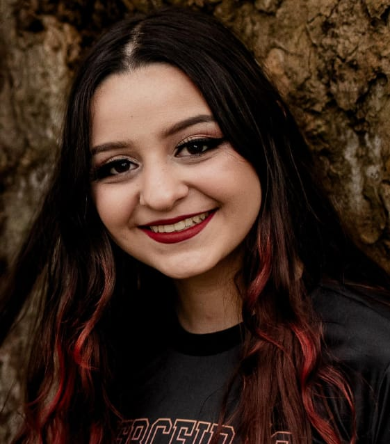

←
Profissional dedicada • Criativa • Comunicativa
Data de nascimento:27/08/2005
Idade:19 anos
Endereço:Rua Guilherme Knies,980 - Venâncio Aires, Rio Grande do Sul, Brasil
Sou uma pessoa responsável, criativa e sempre disposta a aprender. Possuo excelente comunicação, trabalho bem em equipe e tenho paixão por desafios e crescimento pessoal.Atualmente faço estágio na delegacia de Venâncio Aires; Trabalhei na parte administrativa da Alliance one como safrista; Dei aulas em inglês como monitora na Uptime durante 9 meses; Monitorias de inglês e matemática durante 6 semestres no Colégio Gaspar Silveira Martins; Atendimento ao público em feiras, como Oktoberfest e Fenachim, representando a Evaporsul.
Email:gabik.silveira@gmail.com
Telefone:55 (51) 99750 7133
Busco em 2025, acrescentar à minha vida profissional conhecimento por meio de experiência, como por exemplo, na área administrativa e de atendimento ao público, me dedicando ao máximo para consegui-lo.